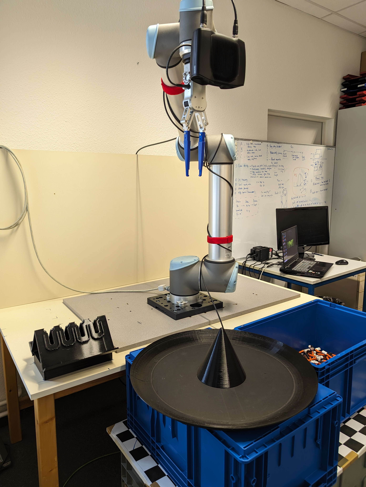
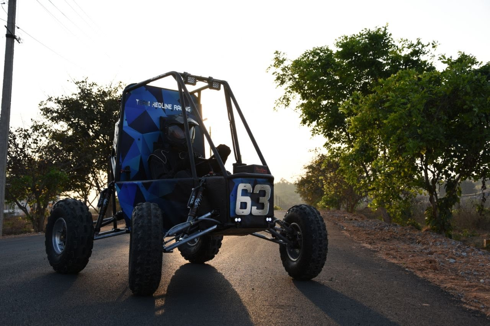
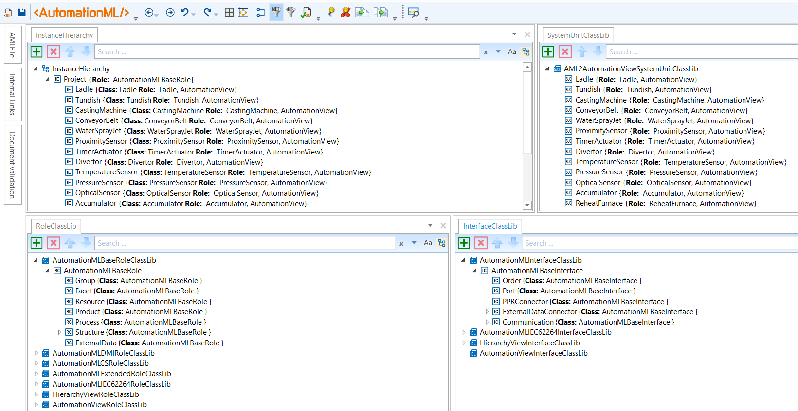
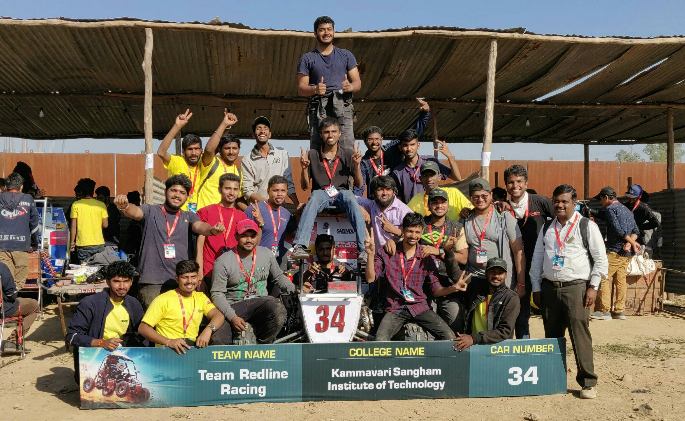

Featured Projects & Systems
Real-world applications in robotics, additive manufacturing systems, automotive racing, and industrial automation.

Volkswagen AG Robot Bin-Picking System
Integrated vision-guided robotic picking solution implemented for Volkswagen AG assembly lines to automate unstructured bin-picking of metallic chassis components.

Independent Dual Extruder (IDEX) 3D Printer
Full kinematic CAD design and mechanical engineering of an IDEX 3D printing system supporting multi-material extrusion, soluble supports, and synchronous duplication modes.

BAJA SAE All-Terrain Vehicle (2017–2020)
Led chassis design, roll-cage FEA, suspension geometry tuning, and manufacturing fabrication for the national BAJA SAE collegiate off-road endurance competitions.

Digital Plant Data Modeling (DIAMOND / KPDM)
Process-oriented digital factory modeling connecting neutral data formats, Asset Administration Shells (AAS), and execution pipelines for agile production reconfiguration.

Rapid Prototyping & Functional Testing
Design for Additive Manufacturing (DFAM) workflow to produce robust functional engineering prototypes, verifying dimensional tolerances and mechanical load properties.

Automotive Racing Team & Fabrication
Hands-on fabrication, TIG/MIG welding, drivetrain assembly, braking system integration, and trackside telemetry debugging during national BAJA events.